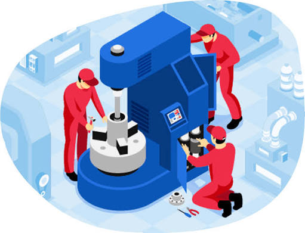

¿Qué es el Mantenimiento Industrial?
Es el conjunto de técnicas y acciones destinadas a conservar los equipos e instalaciones en las mejores condiciones posibles de funcionamiento. Su propósito es garantizar la continuidad de la producción, proteger la inversión y asegurar la seguridad del personal.
Tipos de Mantenimiento
🔧 Mantenimiento Preventivo
Se realiza de forma programada antes de que ocurra una falla. Se basa en el tiempo de uso o en las recomendaciones del fabricante. Su objetivo es prevenir averías antes de que aparezcan.
🛠️ Mantenimiento Correctivo
Se ejecuta solo cuando el equipo ya falló o dejó de funcionar. Se repara o cambia lo dañado para reanudar la operación. Es necesario, pero costoso si se usa como única estrategia.
📊 Mantenimiento Predictivo
Consiste en monitorear el equipo mientras trabaja. Mediante mediciones como temperatura, vibración o ruido, se detecta si el equipo está perdiendo rendimiento y podría fallar pronto. Permite intervenir justo antes de que ocurra el daño.
Consecuencias de las Paradas Inesperadas
- Pérdida de producción: No se fabrican las unidades programadas para ese tiempo.
- Retraso en entregas: Los clientes reciben sus pedidos tarde.
- Costos elevados: Reparaciones urgentes suelen costar más y generan gastos extras.
- Desperdicio de materiales: Productos a medias pueden dañarse al detenir el proceso.
- Menor confianza del cliente: Si las demoras se repiten, el cliente puede buscar otro proveedor.
Ejemplos de Mantenimiento Aplicado
- Prensas industriales: Lubricación semanal de puntos de articulación (preventivo).
- Motores eléctricos: Medición mensual de temperatura y vibración para detectar desgaste (predictivo).
- Bombas hidráulicas: Cambio de sello dañado cuando presenta fugas (correctivo).
Tabla Comparativa de Tipos de Mantenimiento
| Tipo | Características | Ventajas | Ejemplo |
|---|---|---|---|
| Preventivo | Programado por tiempo o uso; se actúa antes de la falla. | Menos averías; mayor vida útil del equipo; producción más estable. | Cambio de correas cada 500 horas de operación. |
| Correctivo | Se interviene solo cuando el equipo ya no funciona. | No hay gasto antes de la falla; solo se paga cuando se rompe. | Reemplazo de un rodamiento que se desgastó y se rompió. |
| Predictivo | Monitoreo continuo; se detecta la falla antes de que ocurra. | Intervenciones oportunas; máximo aprovechamiento del equipo. | Análisis de vibración en rodamientos para detectar desgaste incipiente. |